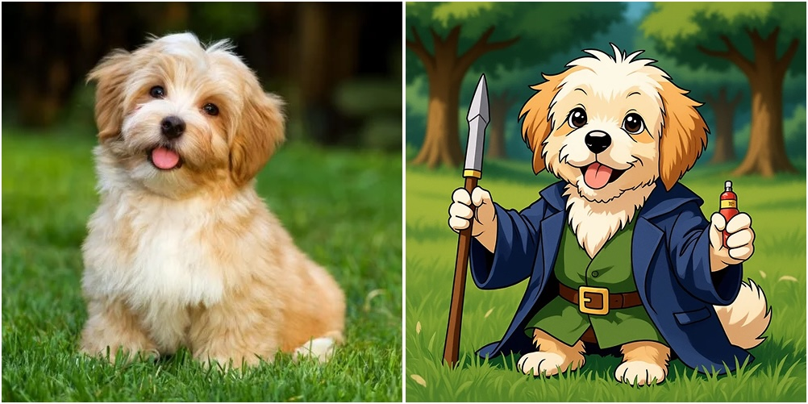

Edit images with Flux Kontext
In this example, we run the Flux Kontext model in image-to-image mode: the model takes in a prompt and an image and edits the image to better match the prompt.
For example, the model edited the first image into the second based on the prompt ”A cute dog wizard inspired by Gandalf from Lord of the Rings, featuring detailed fantasy elements in Studio Ghibli style“.

The model is Black Forest Labs’ FLUX.1-Kontext-dev. Learn more about the model here.
Define a container image
First, we define the environment the model inference will run in, the container image.
We start from an NVIDIA CUDA base image and install the necessary Python packages.
We use a specific commit of the diffusers library to ensure compatibility with the Flux Kontext model.
from io import BytesIO
from pathlib import Path
import modal
app = modal.App("example-image-to-image")
diffusers_commit_sha = "00f95b9755718aabb65456e791b8408526ae6e76"
image = (
modal.Image.from_registry("nvidia/cuda:12.8.1-devel-ubuntu22.04", add_python="3.12")
.entrypoint([]) # remove verbose logging by base image on entry
.apt_install("git")
.uv_pip_install(
"Pillow~=11.2.1",
"accelerate~=1.8.1",
f"git+https://github.com/huggingface/diffusers.git@{diffusers_commit_sha}",
"huggingface-hub==0.36.0",
"optimum-quanto==0.2.7",
"safetensors==0.5.3",
"sentencepiece==0.2.0",
"torch==2.7.1",
"transformers~=4.53.0",
extra_options="--index-strategy unsafe-best-match",
extra_index_url="https://download.pytorch.org/whl/cu128",
)
)Download the model
We’ll be using the FLUX.1-Kontext-dev model from Black Forest Labs. This model specializes in image-to-image editing with strong prompt adherence.
MODEL_NAME = "black-forest-labs/FLUX.1-Kontext-dev"
MODEL_REVISION = "f9fdd1a95e0dfd7653cb0966cda2486745122695"Note that access to the FLUX.1-Kontext-dev model on Hugging Face is gated by a license agreement which
you must agree to here.
After you have accepted the license, create a Modal Secret with the name huggingface-secret following the instructions in the template.
Cache the model weights
The model weights are large (tens of gigabytes), so we want to cache them to avoid downloading them every time a container starts. We use a Modal Volume to persist the Hugging Face cache. Modal Volumes act like a shared disk that all Modal Functions can access. For more on storing model weights on Modal, see this guide.
CACHE_DIR = Path("/cache")
cache_volume = modal.Volume.from_name("hf-hub-cache", create_if_missing=True)
volumes = {CACHE_DIR: cache_volume}We reference the Hugging Face secret we created earlier to authenticate when downloading the model.
secrets = [modal.Secret.from_name("huggingface-secret")]We configure environment variables to enable faster downloads from Hugging Face and point the Hugging Face cache to our Modal Volume.
image = image.env({"HF_XET_HIGH_PERFORMANCE": "1", "HF_HOME": str(CACHE_DIR)})Finally, we import packages we’ll be using in our inference function, but not locally.
with image.imports():
import torch
from diffusers import FluxKontextPipeline
from diffusers.utils import load_image
from PIL import ImageSet up and run Flux Kontext
The Modal Cls defined below contains all the logic to set up and run Flux Kontext inference.
We define our Python class as a Modal Cls using the app.cls decorator.
We provide a few arguments to describe the infrastructure our inference should run on:
The container lifecycle decorator, @modal.enter, ensures that the model is loaded into memory when a container starts, before it picks up any inputs.
This is useful for managing tail latencies (see this guide for details).
The inference method runs the actual model inference. It takes in an image (as raw bytes) and a string prompt and returns
a new image (also as raw bytes).
@app.cls(image=image, gpu="B200", volumes=volumes, secrets=secrets)
class Model:
@modal.enter()
def enter(self):
print(f"Loading {MODEL_NAME}...")
self.pipe = FluxKontextPipeline.from_pretrained(
MODEL_NAME,
revision=MODEL_REVISION,
torch_dtype=torch.bfloat16,
cache_dir=CACHE_DIR,
).to("cuda")
@modal.method()
def inference(
self,
image_bytes: bytes,
prompt: str,
guidance_scale: float = 3.5,
num_inference_steps: int = 20,
seed: int | None = None,
) -> bytes:
init_image = load_image(Image.open(BytesIO(image_bytes))).resize((512, 512))
generator = None
if seed is not None:
generator = torch.Generator(device="cuda").manual_seed(seed)
image = self.pipe(
image=init_image,
prompt=prompt,
guidance_scale=guidance_scale,
num_inference_steps=num_inference_steps,
output_type="pil",
generator=generator,
).images[0]
byte_stream = BytesIO()
image.save(byte_stream, format="PNG")
return byte_stream.getvalue()Running the model from the command line
You can run the model from the command line with
modal run image_to_image.pyUse --help for additional details.
@app.local_entrypoint()
def main(
image_path=Path(__file__).parent / "demo_images/dog.png",
output_path=Path("/tmp/stable-diffusion/output.png"),
prompt: str = "A cute dog wizard inspired by Gandalf from Lord of the Rings, featuring detailed fantasy elements in Studio Ghibli style",
):
print(f"🎨 reading input image from {image_path}")
input_image_bytes = Path(image_path).read_bytes()
print(f"🎨 editing image with prompt '{prompt}'")
output_image_bytes = Model().inference.remote(input_image_bytes, prompt)
if isinstance(output_path, str):
output_path = Path(output_path)
dir = output_path.parent
dir.mkdir(exist_ok=True, parents=True)
print(f"🎨 saving output image to {output_path}")
output_path.write_bytes(output_image_bytes)